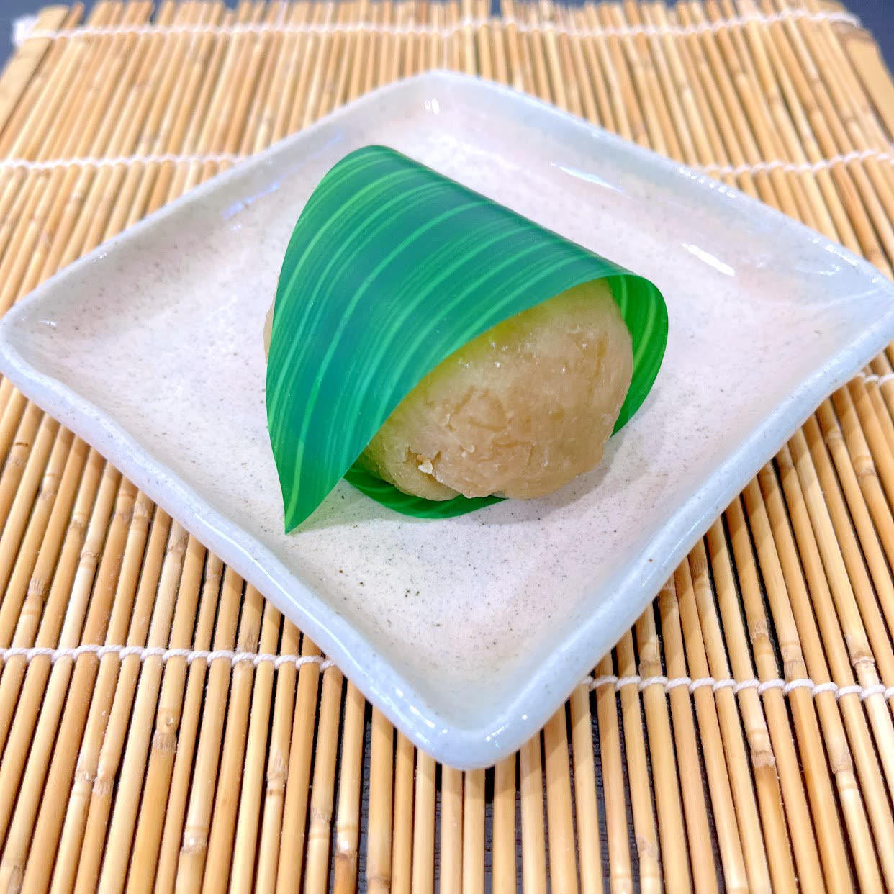
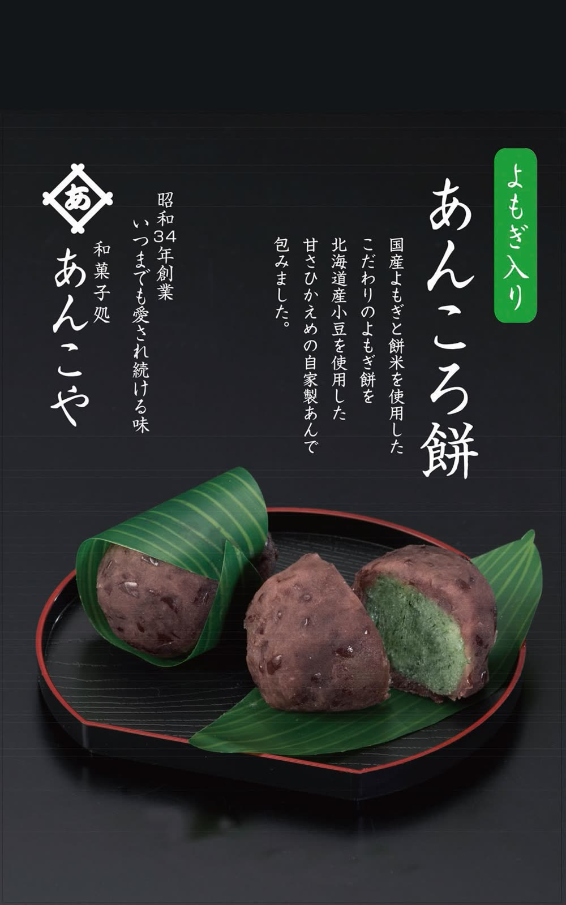

和菓子処あんこや
このあんころ餅を、
こう見せた。
まじめな紹介になりがちな和菓子を、笑って覚えてもらう一本に。
完成した動画(58秒)。CG・AIによるイメージを含みます。

主役は、期間限定の
白あんころ餅。
備中産の白小豆を使った、よもぎ入りの白あんころ餅です。動画の中でも、本物の写真から形と色を変えないようにしました。

賄賂の重箱に、
あんころ餅を入れた。
三段の重箱を開けると、名物のあんころ餅、大判小判、そして期間限定の白あんころ餅。お代官様は小判に目もくれず、最後の段でにやりと笑います。
58秒の、
時代劇に。
店構えはそのままに、まわりの町だけを江戸の夜へ。商品の名前が、笑いと一緒に残る動画になりました。